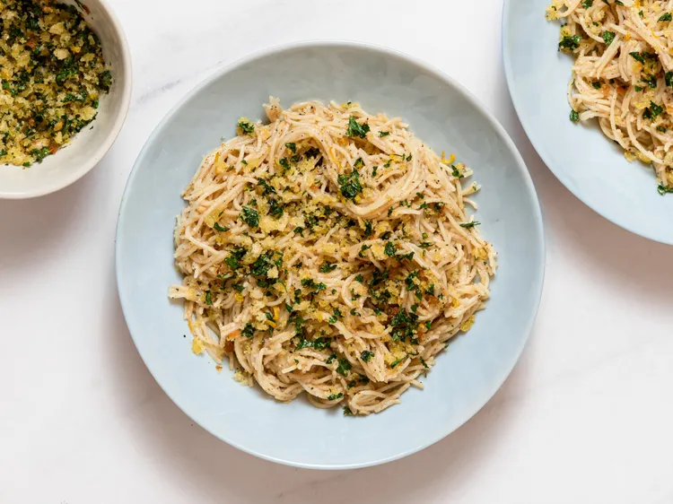

Caesar Pasta
Back Home

Description
This Caesar pasta has all the flavors of a traditional Caesar salad—fragrant garlic, the umami of anchovies (using Worcestershire sauce as a stand-in), salty Parmesan cheese, and the crunch of a crisp crouton—but it is in a lovely angel hair side dish.
Ingredients
Lemony Breadcrumbs
- 1 1/2 tablespoons extra-virgin olive oil
- 1 teaspoon butter
- 1/4 cup panko breadcrumbs
- 1 cup chopped flat leaf parsley
- 1 lemon, zested
- 1 teaspoon kosher salt
Paster
- 8 ounces angel hair pasta
- 2 teaspoons salt
- 1/4 cup extra-virgin olive oil
- 1 teaspoon finely grated or minced garlic
- 2 teaspoons freshly ground black pepper
- 1 1/2 teaspoons Worcestershire sauce
- 1/4 teaspoon Dijon mustard
- 1/4 cup grated Parmesan cheese
Steps
- Gather all ingredients
- For breadcrumbs, combine oil, butter and bread crumbs in a skillet. Cook over medium-low heat, stirring occasionally, until toasted and golden brown, about 3 minutes. Add parsley and lemon zest; season with salt. Cook, stirring, until very fragrant of citrus, about 15 seconds. Transfer crumbs to a small bowl and set aside.
- For pasta, bring a large pot of salted water to boil. Add angel hair and cook, stirring frequently during the first 30 seconds, until tender with a bite, about 3 minutes total.
- Meanwhile, combine olive oil, garlic, and pepper in a skillet. Cook over medium heat just until garlic is fragrant, about 1 minute. Once pasta has cooked for about 3 minutes, scoop out 1/2 cup pasta water; add to skillet. Stir in mustard and Worcestershire sauce.
- Turn up heat and bring to a boil, stirring constantly to emulsify the water with oil, about 1 minute. Reduce heat to low. Using tongs, transfer pasta to the skillet. Alternately, reserve 1 cup pasta water, drain pasta thoroughly, then add pasta to skillet.
- Return heat to high; cook and stir pasta until completely coated and saucs is creamy. Add more pasta water 1 to 2 tablespoons at a time if needed. Remove the pasta from the heat and add Parmesan; toss to coat.
- Divide between serving bowls and top with breadcrumbs.